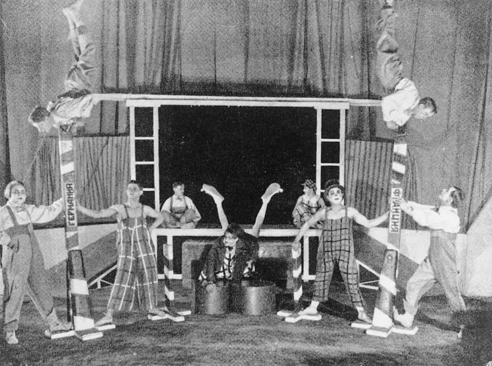

（玛琳娜·茨维塔耶娃，1937年）
普希金夸口说自己的名字会永远在诗人们心中回响，有时真会被俄罗斯文学史的评论家们信以为真，在他们看来，普希金的作品是他的继承者作品中一切瑰意雅言的终极来源。然而说普希金的作品是一切文学创作的起点和终点，其意义绝不仅限于爱国官僚或教育体系的支柱。相反，历代作家都坚信是自己这一代人发现了“真正的”普希金。由于普希金的很多作品并不像课堂上教授的那么“普希金式”，而是关于平衡、节制和教化的不那么体面的老生常谈，这一信念又被不断强化。举例来说，《溺死鬼》是一首典型的浪漫民谣，讲述了一个亡灵回到阳间来报复一位因自私而没有好好安葬他的农民的故事，展现出生动的鬼魂形象：
正如英语世界的每一代戏剧导演和观众都建构了属于自己的莎士比亚（例如1960年代和1970年代表现扭曲性关系的所谓“问题剧”风潮，像《一报还一报》和《特洛伊罗斯和克瑞西达》），历代俄罗斯读者和评论家也发现了“他们的”普希金。例如，《青铜骑士》中描写的圣彼得堡既是一件超凡的艺术作品，同时也是摧毁一切的威权主义的象征。它在彼得堡现代主义文本中犹有回响，如安德烈·别雷的小说《彼得堡》，或因诺肯季·安年斯基的一首诗——诗中，陀思妥耶夫斯基小说中的“黄雾”潆洄在普希金诗里那位青铜英雄的周围。
鉴于20世纪初俄罗斯历史的状况，难怪普希金会因为宗教哲学家西梅翁·弗兰克所谓“对生命内在悲剧的忧虑”而受到重视。但他受重视的另一个原因是，作为一个作家，他曾强调过作家的重要意义。很多作家看重的恰恰是普希金浪漫主义的那一面。评论家米哈伊尔·格尔申宗认为，《“纪念碑”》应该被解读为在“懂得诗歌的人们中间”“真正的”名声和“群氓口中粗俗的名声，一种沉默的名声——仅仅是为人所知而已”之间划清界限。这种解读完全符合当时的时代精神。在普希金的诗作《先知》中，诗人被描述成一个普罗米修斯式的流放者，拥有洞察所处文化的独特天赋，这首诗在1890年到1940年间产生了几十首模仿品，那段时期，现代主义作家们重申了艺术至高无上的地位，并据此充满浪漫主义地把艺术家理解为英雄、神圣的疯子和先知。
无疑，20世纪也多少为前普希金时代的诗歌恢复了名誉，玛琳娜·茨维塔耶娃、奥西普·曼德尔施塔姆和后来的约瑟夫·布罗茨基等重要人物，都受到了杰尔查文的启发，后者顽固地坚持晦涩文风，冷峻硬朗却又令人振奋。然而现代主义强调追求原创性，这一点与人们关于18世纪作品刻意墨守成规的理解格格不入。一个典型的例子就是弗拉基米尔·纳博科夫，他在《叶甫盖尼·奥涅金》的注释中猛烈抨击卡拉姆津的枯燥乏味和史诗作家米哈伊尔·赫拉斯科夫的晦涩阴郁，勉强地说杰尔查文至多有“少许粗糙的天赋”。在诗歌中，普希金在自己关于诗人的那些作品中采用的叙述声音既带有反讽的怀疑主义，又充满挑衅地强调了灵感的价值，成为表达艺术体验的最佳手段。1910年代和1920年代，“普希金式”写法在散文中也得以复兴——利用框架叙事、引言、文本内嵌文本等策略来标示故事与现实之间的距离，其可能性更多地依赖风格而非内容。
虽然作家们总是在主题方面，以及借用词汇和有“普希金式”回响的形式来向普希金致意，但后世作家的作品却完全没有受到普希金文学创作的约束。事实证明，跟普希金写过的体裁相比，后世作家用他没有涉猎的体裁写作往往更为多产。虽然安德烈·西尼亚夫斯基曾将普希金的诗歌描述为“充满大量的私人素材”，但事实上跟他的信件或笔记不同，普希金抒情诗中堪称严格的“私人素材”的东西很少，而且这类素材总是经过变形后才出现。看似以第一人称写下的忏悔诗事实上却是“化装忏悔”，也就是借某个虚构人物的话语进行忏悔。在他的抒情诗及戏剧和小说中，普希金选择穿着的“戏装”令人眼花缭乱。普希金在随笔和笔记中明确说明他与莫扎特惺惺相惜，同时又跟萨列里 [17] 趣味相投，在他的其中一部《小悲剧》中，这两位可是公然对立的主人公；《黑桃皇后》中那位固执而神经质的日耳曼主人公赫尔曼，与上流社会唠叨八卦的主角、毫不费力便魅力四射的托姆斯基，都是作者的第二自我。虽说“化装忏悔”的方式是俄罗斯文学的特色（比如说在莱蒙托夫的《当代英雄》和阿赫玛托娃的早期诗歌中都会看到这种方式），但普希金选择的面具之繁多新奇，实在独一无二。
忏悔诗也并非唯一不是由普希金作品开创的体裁。正如利季娅·金茨堡在她关于19世纪俄罗斯文学的经典文学史著作《论心理散文》中所说，亚历山大·赫尔岑的《往事与随想》才是忏悔散文这种体裁的先驱，赫尔岑在文中使用了大量情感炽热的华丽辞藻，大概连普希金看了也会觉得难堪。相反，普希金那些妙趣横生地自我贬低的信件却在俄国传统中后继无人。后期书信体的大师如玛琳娜·茨维塔耶娃，就倾向于文学–哲学式的抽象及悲叹命运的不公，而不是以揶揄的幽默写出具体的细节。就戏剧而言，普希金没有写过情节喜剧，而这一体裁在他生前身后都是俄国戏剧的光荣传统。（果戈理的《钦差大臣》是国际戏剧保留剧目中独一无二的杰作，它继承了18世纪的文本，如冯维辛的《纨绔少年》或克尼亚日宁 [18] 的《吹牛家》，并启发了亚历山大·奥斯特洛夫斯基，后者勤奋高产，是19世纪中期俄罗斯戏剧的中流砥柱。）普希金对悲喜剧这一极其重要的体裁也毫无贡献，这一体裁的杰作包括契诃夫的《樱桃园》和马雅可夫斯基的《臭虫》。他最伟大的成就始终是孑然孤立的。诚然，《叶甫盖尼·奥涅金》也吸引了不少模仿者，但那无非都是些逗趣的打油诗作。穆索尔斯基在《鲍里斯·戈杜诺夫》这部歌剧的编排中倒是抓住了原作的心理复杂性，而阿列克谢·康斯坦丁诺维奇·托尔斯泰关于鲍里斯、其前辈和后人的历史剧三部曲却因用力过猛而乏味无趣，远不如年轻的普希金来得俏皮可爱、灵气逼人。
如果要把普希金看成一代先驱，那是说他开创了“混合体裁”文本的风气。举例来说，《埃及之夜》（1835）这首采用散文“框架”的叙事诗就有卡罗利娜·帕夫洛娃的《双重生活》（1844—1847）与之呼应（但绝非模仿），后者是用诗歌语言写成的散文故事，表现主人公塞西莉亚的思考和梦境。不过鉴于整个欧洲的浪漫主义文学都汲汲于采用新的混合形式（想想海涅的“诗体小说”《阿塔·特罗尔》，或者歌德的《威廉·迈斯特》运用歌曲来表现迷娘的想象世界），很难说俄罗斯文学的文类间文本完全来自普希金的影响。
就连普希金对于俄罗斯文学语言的发展起到过重要作用这一传统观念，也并非十分有理有据。普希金对句法的精简大多早在18世纪就已有先例，不光在一贯被认为是前普希金时期文学先驱人物的尼古拉·卡拉姆津的作品中可见一斑，也出现在那些名不见经传的文本中，例如娜塔丽娅·多尔戈鲁卡娅女大公1767年撰写的回忆录（那是她为自己的后代撰写的私人记录），以及从法文翻译过来的小说和教养书等。此外，正如鲍里斯·加斯帕罗夫等学者所说，普希金式/卡拉姆津式传统只是19世纪初期众多文学走向中的一个；其他作家对它的态度可能是既有拥护，又不乏反对之声。
至于散文体小说，普希金的遗产也同样矜奇立异。拥戴普希金为“俄罗斯文学之父”的支持者的一个痛点就是，虽然普希金曾多次涉猎各类体裁并颇有辉煌成就，他却没有为鸿篇巨制的心理小说提供典范，自19世纪末以来，那才是国际上公认的俄罗斯对世界文学的最大贡献。即便像纳博科夫这样一个坚定的现代主义者，曾宣称大部分俄语现实主义散文立意虚假、表达啰唆，还曾表示对心理写实主义充满憎恶，在评注普希金的《叶甫盖尼·奥涅金》时也说，奥涅金“一旦开始用心感受，一旦不再扮演他的创造者赋予他的角色——对其他文学角色的夸张戏仿，一个整日插科打诨、偏离正轨的蹩脚货色——就变得飘忽不定、索然无味了”。这首先是纳博科夫热爱这部小说的表面文章。诚然，《叶甫盖尼·奥涅金》风格多样，还有个可以充当多种角色（小说人物的朋友和代言人，一个嘲讽愚行、同情悲苦的评论员）的叙述者。然而就连达吉雅娜也始终是一个象征而不是对真切现实的模仿，一个理想主义的尤物而非具象的表现。她既是外省少妇的肖像，也是创作感受力的显灵。如果说她在清醒时写给叶甫盖尼的信只是她从读过的书中摘录的一套引语，她关于叶甫盖尼被怪异生物包围的梦境却是普希金用自己的抒情歌谣语言记述的。

图13 《智者千虑必有一失》，奥斯特洛夫斯基
比如说，在托尔斯泰、陀思妥耶夫斯基或契诃夫的作品中都看不到这些影响的痕迹。普希金笔下的人物往往没有他们自己的声音：他们是作者悬挂自己才华锦缎的木桩子（果戈理的人物也是一样，除了《钦差大臣》中的市长，这个人物在最后因为针对自己的恶作剧而愤怒爆发时，才获得了全剧中唯一一处真正个人化的雄辩口才）。普希金尖刻而超脱地刻画了赫尔曼和丽莎这两个人物，让他们几乎没有空间发声：尤其是赫尔曼，因为从头到尾我们都是从外部观察他，因而始终是个谜一样的人物。与之有霄壤之别的，要属陀思妥耶夫斯基那部出色的——并且无论以俄国还是以世界标准来评判都是革命性的——小说《地下室手记》，在那部小说中，我们唯一的定位点就是中心人物自己的声音，从小说的第一句话开始，他就用反复无常又前后矛盾的话折磨着我们：
英语翻译无法模仿原文的语法，原文利用了俄语句法的灵活性，把形容词放在每段第一句话的不同位置，如此抑扬顿挫，“其貌不扬”一词就有了歇斯底里一般的高音调，像大获全胜似的。不过修辞策略的性质还是可以通过翻译得以传达。每说一句话，它便立刻被反驳；正如“地下室人”一方面固执地独处，一方面又离不开他的倾听者，那个“大概不明白这是什么意思”的对立者，这本身就是矛盾的。在呈现“地下室人”的忏悔时，作者没有使用任何力求加强回忆录“真实性”的传统手段。在他死后没有发现日记，他的倾听者始终匿名，也没有什么激励性的事件（相反，托尔斯泰的《克鲁采奏鸣曲》中的杀人犯就在火车车厢里因为一场关于婚姻的讨论而开始了忏悔）。《地下室手记》打破了普希金散文中的文学规范，正如它那个粗鲁的、不宽容的偏执狂叙述者滔滔不绝地诉说着他对上流社会行为规范的不屑一顾。
当然，普希金散文的有些方面也被后来的一些作者视为典范。在契诃夫看来，普希金很少用比喻性文字，他更喜欢转喻而不是暗喻，这一点尤为可贵。在托尔斯泰看来，普希金的开篇段落总是开门见山，颇值得重视。《安娜·卡列尼娜》的第二句话——“奥布隆斯基家里一切都混乱了”——与《黑桃皇后》的第一句话同样是刻意为之的单刀直入：“一天，大家聚到近卫军骑兵军官纳鲁莫夫家里赌牌。”
不过，虽然托尔斯泰开展叙述的方式最“像普希金”，他在其他方面却显然是反普希金的。他在《战争与和平》中滑稽描绘的拿破仑在表现手法上跟普希金风马牛不相及，普希金曾以矛盾但热切的笔触向这位浪漫主义的伟大领袖致敬。《拿破仑》（1822）的开头几行利用18世纪正式颂歌的宏大意象来突出这位法国皇帝超越一切的伟大：
在托尔斯泰的《战争与和平》中，“天意”代替了“命运”，人物在各自的上帝和文学创造者眼中之所以伟大，恰是因为他们没有心怀这里所述的“伟大”抱负。在普希金的作品，如《青铜骑士》中，“偶像”一词占据着举足轻重的地位，那是崇高伟大和道德过失的矛盾混合体。在托尔斯泰的心中，一切偶像顾名思义都是欺骗性的，偶像在试图超越其普通的人性的过程中，必然会暴露其粗俗空洞的真实自我。托尔斯泰的父亲是普希金的同代人，他曾经让幼年的托尔斯泰背诵那首《拿破仑》，然而这一经历竟丝毫没有让托尔斯泰对普希金和他笔下的英雄保持敬畏。
同样，普希金认为散文应该“节制”“明晰”，与他不同，托尔斯泰那些鸿篇巨制的“臃肿怪兽”简直挑衅得近乎无理。《黑桃皇后》的尾声让故事结尾夸张地简洁，突出了这是一部小说的事实。相反，托尔斯泰的小说结尾却总是被它们的尾声和后记弄得含混模糊。作者有意识地一再重返那些他不忍抛弃的主题。命运的暗示在《黑桃皇后》中扮演了一个模棱两可的角色，而在托尔斯泰这里却总是可以避开的。如果说赫尔曼可能真的被某种“未知的力量”——一种尽管源自他的内心，却充满恶意的超自然力量——带到了伯爵夫人的宅邸，那么在托尔斯泰这里，人物相信自己的命运可以被“预示”本身就是一种心灵的病态，一种自毁倾向。
因此，托尔斯泰是把普希金“当作诗人”来阅读的读者的典范，按照普希金本人的理解，“诗人”的意思是一种广义的创作型人格，灵感来源或许可以是无关的事物，而不必是他或她所阅读的文字。
在《战争与和平》出版后一个世纪左右，才有作者像托尔斯泰那样大胆而富有创造性地否定普希金。然而到了1960年代，至少在一些非官方的苏联作家中，几十年被强制洗脑的爱国主义已经让他们对文学经典产生了极大的厌恶。举例来说，瓦尔拉姆·沙拉莫夫的《科雷马故事》中的一篇，作者就在开头辛辣地戏仿了《黑桃皇后》的第一句：“一天，他们在战俘营骑兵军官纳鲁莫夫的兵营里赌牌”，无情地强调普希金的原文与苏联生活无关。约瑟夫·布罗茨基则在自己的诗歌中进一步驳斥了普希金，他个人列出的俄罗斯伟大诗人的正典（杰尔查文、巴拉丁斯基、曼德尔施塔姆）就公然绕开了“俄罗斯文学之父”。
例如，布罗茨基的重要系列《献给玛丽亚·斯图亚特的二十首十四行诗》（1974）就以各种公开和隐秘的方式跟普希金划清界限。它选择了一种普希金很少使用的诗歌形式（十四行诗）。头韵成为整个组诗中一个引人注目的修辞手段，远比普希金作品中的头韵更加一目了然。布罗茨基还从一开始就清楚地表明，被称为“玛丽亚·斯图亚特”的那个“缪斯”是个虚构的幻想，她即将“步下荧幕/像一尊雕像那样，给公园带来朝气”（第一首十四行诗）。比起普希金晚期的好几首诗作中指称的雕像（布罗茨基使用这个比喻也让我们联想起那些雕像），这里被指称的这座雕像更虚幻，同时也更真实。她来自抒情主人公少年时看过的一部电影，片中“萨拉/莱安德噔噔噔地走向绞刑架”（第二首十四行诗）。也就是说，她是个远不如雕像真实的艺术影像。然而与此同时，组诗坚称她是现实的实体存在，是应当得以实现的某个欲望的对象，因而“苏格兰成为我们的床垫”（第八首十四行诗）。为了进一步彰显他与普希金不同，布罗茨基频繁地引用普希金的爱情诗，以此来削弱它们的情感修辞力量，从传统的文学虔敬的角度来看，这实属粗鲁无礼，尤其是他运用了刺眼的字词错位，这跟普希金把不同的诗歌风格和谐地融合在一起的精神截然相反。一个恰当的例子是第六首十四行诗，嘲讽地戏仿了普希金的《“我爱过你”》（这里采用的是彼得·弗朗斯的译本）：
除了两处直接引用普希金（这里使用了楷体加粗，原诗全文见本书第六章）外，这首诗与原诗的戏仿关系是通过在俄文诗第12行中，一个古体的冠词“sei ”的使用建立起来的——就语域而言，“彼之炽火”应该是个正确的译法。然而这里使用原文仅仅是为了衬托纯粹布罗茨基式的（也就是20世纪的）修辞装饰。这包括第14行中的俗语“byust ”（即“胸部”，这里翻译成“臀部”，在爱情诗的语境中，普希金大概会使用高雅的“persi ”一词，即“胸部”），第6行提到的“颤抖”，第11行中脱口而出的巴门尼德（5世纪希腊理性主义哲学家，他认为只有存在的才是可知的），以及特别要提到的，第9行中对于上帝典故的嘲讽式颠覆。
即便在20世纪的俄罗斯文学中，这样凭借着对普希金作品的了解，公然挑衅地以普希金反普希金的写法也不多见。更常见的做法是试图找到“另一个”普希金来替代那个“俄罗斯文学之父”，或通过再次审视普希金本人的作品来找到“他的时代之前的苏联爱国者”。正如审查制度培养了“伊索式语言”，“最伟大的俄罗斯作家”这一狭隘的官方形象也培育出了“伊索式普希金”。从1930年代中期开始，通过撰写普希金这个不证自明的“安全”话题（不像晚期的陀思妥耶夫斯基那样公然憎恶俄国革命运动，投身东正教会），作家们能够借以探讨某些倘若直接涉及便是绝对禁忌的问题。
一个例证就是安娜·阿赫玛托娃关于普希金的文章。这些文章强调了普希金“加密”的天赋——那时，阿赫玛托娃本人正在为应对制度化的压制而发展出一种保护性的晦涩文风。同样，阿赫玛托娃强调普希金在一个因威权主义而沦为道德阴沟的世界里为尊严而战，也表达了她对苏联作家所处地位的看法。也正是出于同样的动机，肖斯塔科维奇使用他为普希金的诗《再生》谱的曲中的引语，从而把身后艺术正当性的主题编入他的《第五交响曲》，那是在《姆钦斯克县的麦克白夫人》1936年首演遭受恶毒诽谤之后，他创作的第一部重要的公开作品。当然，在这里强调作家的神圣角色会让这些对普希金的非官方看法接近于官方看法，即便解读不同，起码语调听来也很像。然而还有些不那么正襟危坐的“另类普希金”。很多人更喜欢，用安德烈·西尼亚夫斯基的话说，“绕开庄严堂皇的前门——那里立着一排供人检阅的胸像，脸上都带着不屈不挠的高贵表情——而凭借着街头文化凭空捏造的奇闻逸事”走近普希金，“那是对普希金显赫威望的回应，也可以说是报复”。顺着西尼亚夫斯基自己的比喻往下说，这些作家是通过后门或者“黑色入口”，而不是前门或“检阅入口”了解普希金的。
“后门”一词的低俗特质指向了一个事实，那就是一切形式的私密性都是20世纪反体制文学的一个核心比喻，这继而引发了对普希金私密作品的重视。《加百列颂》是一个对神不敬的风流故事，讲述撒旦和天使加百列及上帝致使圣母玛利亚怀孕，这首诗的手稿在普希金生前便开始流传，直到革命之后才得以全文出版，如今却获得了正典的地位。1920年代为了准备出版第一版普希金“全”集，私人信件、草稿、笔记等数量大增，也同样有助于建构一个全新的“私密的”普希金。最明显的是，他们探索了跟“民族诗人”的端庄形象格格不入的内容。在这里，我们会看到普希金吹牛说他从多产的应景诗人赫沃斯托夫伯爵新近出版的书上撕下了一堆纸片，已经用它们擦过了自己的“罪恶之洞”；看到他说自己的生殖器上点缀着“冒号和逗号”，而某个有权势但性无能的大人物的生殖器上只有一个“逗号”。然而关于普希金的新素材不光能让我们看到这些违禁品，它们还使得人们越来越意识到，作家的手稿本身就是文本，而不仅仅是灵感和出版物的中间阶段（不管普希金本人对文本完整性有何担忧，他一定也明白这一点）。1928年以后，随着审查制度越来越严厉，越来越多的作家开始尝试“沉默体裁”或撰写“收入书桌抽屉”的文本，手稿本身便成了唯一有可能逃脱社会管制的东西。书籍可能会从图书馆里被清洗一空，但用米哈伊尔·布尔加科夫的话说，“手稿是烧不尽的”，他的《大师和玛格丽特》就是经历了斯大林时代仍幸存下来的著名手稿之一（布尔加科夫本人就没那么好运了）。此外，普希金的手稿上有他涂鸦的风景画、沙龙女郎的肖像、鸭子、魔鬼和战马，生动活泼，有一种1910年代和1920年代的前卫出版物特有的实体特质（“手制过程”），但在1930年代便随着印刷品文化的管制加强而消失了。（图9）
普希金随手涂鸦的自画像呈现了一个有别于青铜雕像的备受欢迎的另类诗人形象，让1960年代的现代主义者们感兴趣的也恰是这位诗人的无形性、他的“空洞”、他的“聒噪”、他的毫无是非感和油滑多变的风格，以及他特有的不可界定性。人们又开始对打油诗人普希金感兴趣了，1920年代的作家们也曾为他的这一身份所吸引，那时，即便是普希金作为先知的神圣观念也曾被嘲讽地调用（1929年，作家维肯季·魏列萨耶夫曾好奇《“纪念碑”》是否像叶甫盖尼·奥涅金这个人物一样，或许不是对浪漫主义刻板印象的轻慢嘲弄：“有没有可能这首诗不仅仅是一首打油诗？”）。苏联社会主义现实主义者们严肃认真地把自己看成托尔斯泰和屠格涅夫的继承人，一本正经地向读者宣读他们自己关于“作家写作技巧”的看法。然而1960年代和1970年代的地下作家和半官方作家们却偏爱通过嘲讽的“后门”来研读俄罗斯文学经典作品。韦涅季克特·叶罗费耶夫的《从莫斯科到佩图什基》是对引用经典文学以展示某一文本的文化资历这一官方做法的归谬——它把从《圣经》到鞋油盒上的标签等各色文本杂乱无序地聚集在一起，压根儿没有孰轻孰重。在德米特里·普里戈夫仿《真理报》的风格写成的伪讣告中，作者利用普希金的轻浮品质来颠覆官方生平介绍和著名作家们的浮夸风气：
普希金从“俄罗斯文学之父”变成了一个小丑，一个终日沉溺于单身汉狂欢的人。甚至还有人似乎在用一部色情赝品恭维他，即1836年和1837年的所谓秘密回忆录，其中坦陈了他和妻子娜塔丽娅及妻妹亚历山德拉三人同床的狂欢。如今除了《叶甫盖尼·奥涅金》（其重要性不是别林斯基所谓的“俄罗斯生活的百科全书”，而是偷听八卦的有趣篇章和“操纵情节”的实例）
外，他的主要作品还包括《科隆那的小房子》《加百列颂》和《努林伯爵》。